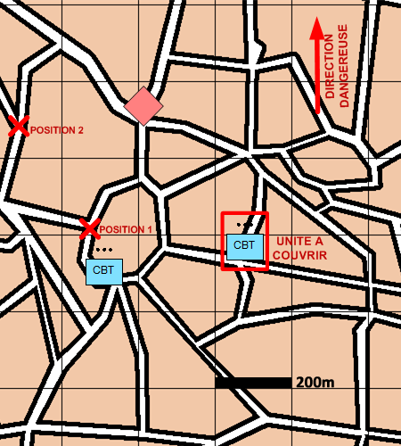

NIVEAU : Pion
ARME : Melee
MISSION : Couvrir
NIVEAU : Pion
ARME : Melee
MISSION : Couvrir
Schéma de modélisationCouvir |
Paramètres obligatoiresUnitésUne ou plusieurs unités amies à couvrir. A partir de Positions à partir de laquelle l'unité va couvrir. Ces positions doivent être réalistes (avoir des vues, pouvoir se servir de ses armes...). |
|
Paramètres optionnelsDirection DangereuseLimite gauche / Limite droite Lignes de début et fin de mission [LDM/LFM] |
||
 |
Fiches missions |  |